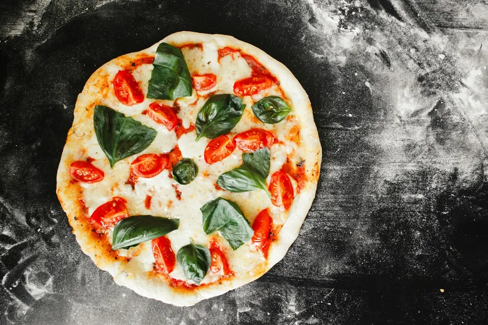
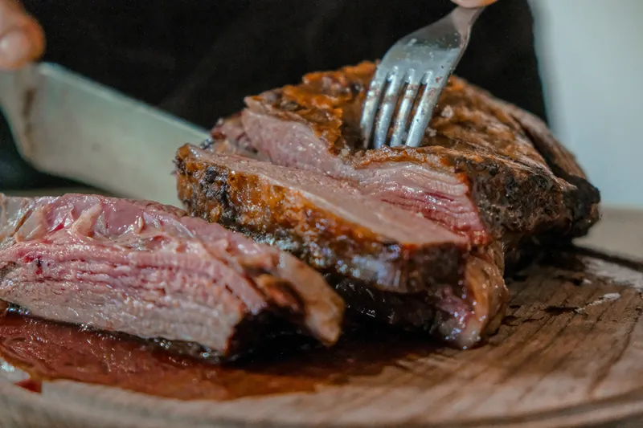
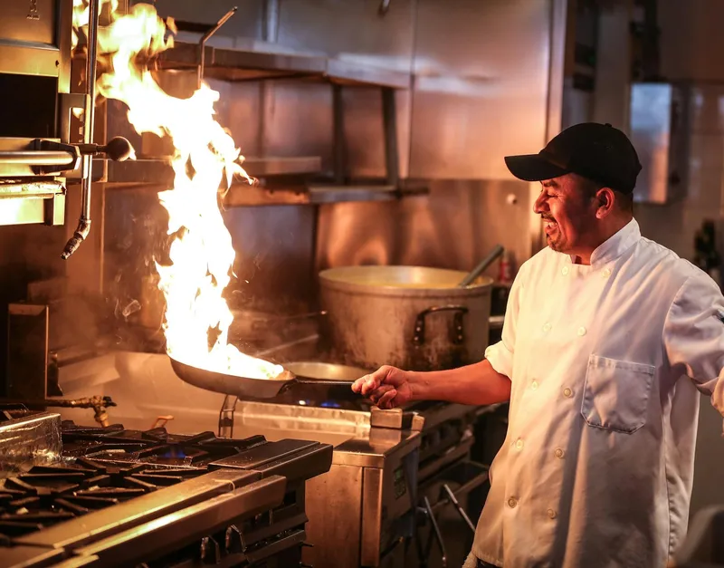
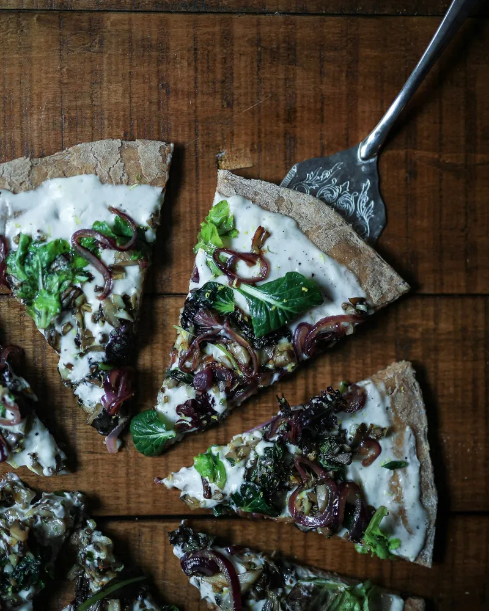
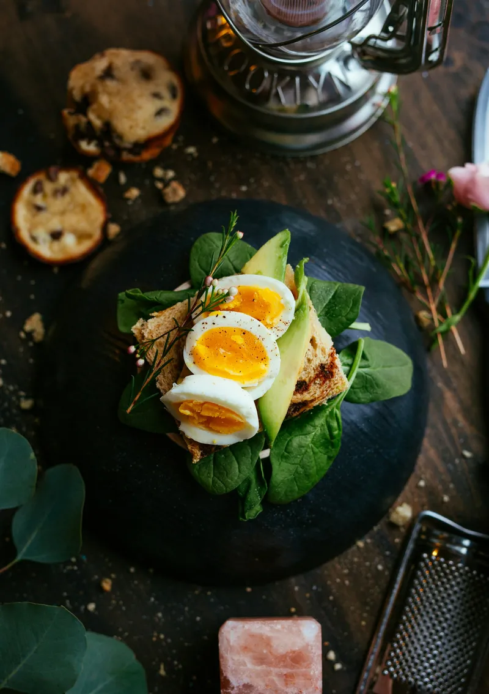
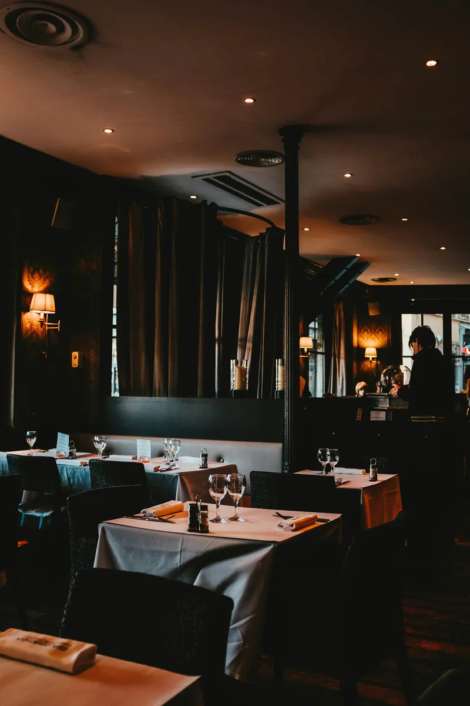
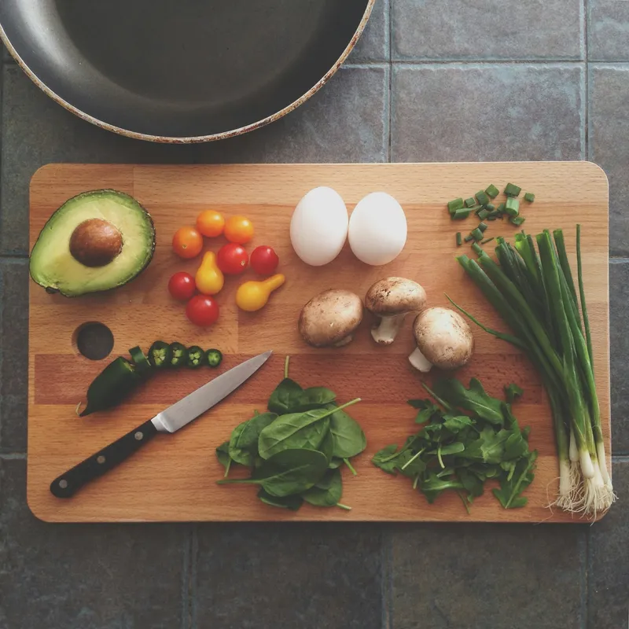

Hot pizza, real cheese
Wood-fired on 72-hour cold-fermented dough — chewy, blistered, and made to be shared.

Do Burj Plaza · Kohinoor City · Faisalabad
Wood-fired pizza, stone-grilled steak and creamy Alfredo pasta — served in the fine-dining room Faisalabad dresses up for.

From the grill
Portobello’s stone-grilled beef steak is the dish regulars name first — cooked to your taste, half or full done, and served the way a steakhouse should serve it. It sits beside a Mediterranean tarragon chicken and a Chicken à la Kiev that reviewers keep coming back for.
Everything from the grill shares the same room: low light, white tablecloths, and a kitchen that treats a steak like the main event, not a menu afterthought.

From the wood-fired oven
Seventy-two hours in the dough. Minutes in the fire.
Sunday brunch
Ask anyone who eats out in Kohinoor City and the same line comes back: Portobello’s Sunday brunch is very famous in Faisalabad. Families book it, friends meet over it, and regulars treat it as the week’s one proper sit-down.
It is the same kitchen, the same room — just slower, brighter, and built for a long table that doesn’t hurry.
Book Sunday Brunch

The room
This is a room people dress up for — date nights, family dinners, and the tables where Faisalabad’s familiar faces are spotted. Reviewers score the environment five out of five, and the presentation to match.
From the kitchen
Nothing on the board is rushed. Dough ferments for 72 hours before it meets the fire. Steaks are grilled to the doneness you ask for. Soups arrive in bread bowls that are part of the dish, not the decoration.
It is the kind of kitchen where the food does the talking — and where reviewers keep naming the same dishes, visit after visit.

Why locals choose Portobello
The themes that come up again and again across Google, Tripadvisor and local guides — in the reviewers’ own spirit, not ours.
One of the best restaurants in town for fine dining. Reviewers score environment, presentation and quality five out of five.
“Sunday brunch is very famous in Faisalabad.” The week’s most-booked table, year after year.
Stone-grilled steak, seafood chowder in a bread bowl, Mediterranean tarragon chicken — regulars order them by name.
Reviewers call it pricey by Pakistani standards — and keep coming back, because the food and the room justify it.
Regulars praise the management and the welcome. Book ahead, and the table is ready when you are.
From the pass
Tap any plate to see it larger.
Visit
Good to know
Shop No. 68–73, Do Burj Plaza, on Kohinoor City Road in Kohinoor City, Faisalabad — the fine-dining strip the area is known for.
Reservations are offered, and the room fills up on Sundays and weekend evenings. Call 041 8555583 (or 8555584) to book — it takes a minute and the table is ready when you arrive.
Italian and steakhouse: wood-fired pizza, pasta, stone-grilled steak and grills, with soups served in bread bowls and a famous Sunday brunch.
Yes — takeout is listed among the restaurant’s services. Call ahead and your order will be ready to collect.
Daily, 11:30 AM to 11:00 PM. One listing shows 1 PM to 11 PM, so if you are coming early in the day, call to confirm before you set out.
Reviewers describe Portobello as premium — pricey by Pakistani standards, and worth it for the food and the room. Prices are on request; call the restaurant for today’s menu prices.
That is the line that comes up most in reviews: the Sunday brunch is very famous in Faisalabad. Book ahead on Sundays — it is the week’s busiest table.
Reserve a table
Tell us when you are coming and we will put the phone in your hand — reservations are confirmed by the restaurant, by phone, in a minute.
041 8555583or 8555584
For Sunday brunch, book a day ahead if you can — it is the week’s busiest table.